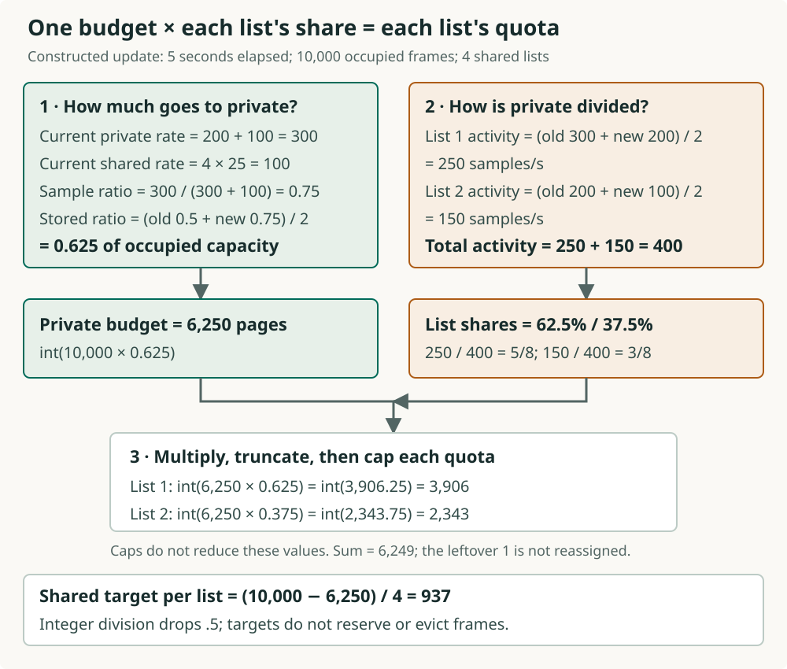
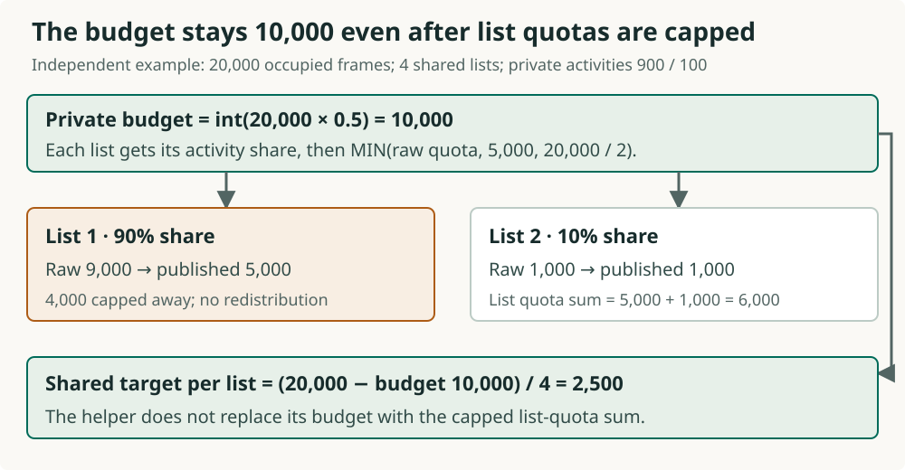

Why load the same page from disk again?
A page is a unit of database data. A frame is a memory slot that can hold one page. The buffer pool is the collection of these slots.
For a teaching example, imagine 12 frames, all occupied. One request repeatedly reads the same four pages. A large scan runs alongside it, reading other pages in sequence.
When the scan brings in its next page, an occupied slot must become available. If the page removed from that slot is one the repeating request soon needs, that request must load it again from disk.
A full pool therefore needs a policy for which pages to keep longer. The scan also needs room to make progress.
Can the original retention target stay fixed?
Continue the teaching example: all 12 frames, the memory slots for pages, are occupied. The repeating request initially needed four pages. Its work changes: it now cycles through eight pages. The scan continues.
| Situation | Pages the repeating request needs | Pool capacity |
|---|---|---|
| Before the change | 4 | 12 frames |
| After the change | 8 | 12 frames |
A fixed retention target cannot reflect that change. A target can also become unsuitable when the activity associated with it falls. These are reasons to reconsider targets while work runs, instead of setting them only at startup.
Maintenance performs that reconsideration using observed activity. It does not know future requests and does not guarantee that all eight pages will stay resident.
What is a quota a target for?
CUBRID groups resident pages into replacement lists. A list records where its pages stand in the replacement policy; it is not a separate allocation of memory slots.
A private list is associated with sessions; several sessions can share one. A shared list provides common retention accounting. Both belong to the same buffer pool. Private does not mean exclusive page access, and shared does not mean scan pages.
A quota is the target number of pages to retain for a private list. It is not a reservation or a hard limit on pages that may be present. Shared lists also have computed target sizes for their retention zones.
Maintenance uses activity samples to recompute private-LRU quotas and private/shared LRU zone-size thresholds. Total buffer-pool frame capacity stays unchanged. A zone is a part of a replacement list with a particular retention role. When adjustment conditions permit, excess entries move toward the candidate zone.
What activity can maintenance observe?
A replacement list groups resident pages for retention policy; its quota is a target page count. Maintenance needs evidence of activity to revise that target. It collects approximate samples while callers finish using pages.
A fix protects a page's resident frame against reuse while a caller uses it. A final unfix releases the last current fix on that page. Selected final-unfix paths contribute to two different kinds of accounting:
| Sample | Question it helps answer |
|---|---|
| Per-thread counted final unfixes | Has enough activity accumulated to consider another update? |
| Per-list eligible hit samples | How should observed activity contribute to the lists' targets? |
A BCB is the control record for one frame. Its list-hit sampling normally suppresses a second eligible contribution in the same accepted update period. Repeatedly reading one resident page therefore differs from counting every read.
How do samples reach the replacement policy?
The maintenance daemon is a background thread. After the server's boot gate permits useful page-buffer work, it calls the quota helper. A quota is a list's target page count; zone thresholds describe target sizes within a list.
- Check whether this call may consume a new sample set.
- If accepted, read activity samples and recompute quota and zone thresholds.
- Check whether a list needs zone adjustment. If so, adjust it under its list mutex, the lock that protects list changes.
pgbuf_page_maintenance_execute
→ pgbuf_adjust_quotas
→ pgbuf_lru_adjust_zonesThe quota helper changes metadata. It copies no page bytes, forces no write-ahead log and performs no page I/O. Its zone adjustment can also try a protected direct offer to a waiting request; the next screens separate that offer from merely changing a target.
Target publication and adjustment guards
Q&A · Does maintenance write pages when it moves them to a colder zone?
Quota adjustment changes list metadata and retention preference. It copies no page bytes and performs no page I/O. A colder page still needs the relevant preservation and protected reuse checks.
adjust_age counts accepted sample-update passes rather than elapsed time. The diagram separates statistics access from boundary adjustment. VS-20 records the separate backup loops whose bodies are skipped at this pin. Quota adjustment performs no page I/O.

What changes when a retention target falls?
A quota is a private list's retention target. Its pages occupy three zones: LRU1 favors retention, LRU2 is intermediate, and LRU3 supplies replacement candidates. These are positions in a list, not three separate memory pools.
Suppose a new sample set produces a smaller quota. Maintenance writes that target and its smaller zone thresholds. For a private list, it calls zone adjustment only if the combined LRU1 and LRU2 count exceeds the new quota. Shared lists use a separate zone-threshold guard.
| Stage | What changes |
|---|---|
| Publish the new target | Quota and zone thresholds change; no page is removed just by storing these values. |
| Adjust zones when the guard passes | Excess warmer entries move toward LRU3 under the list mutex. Without a successful direct offer, those entries remain resident. |
| Advertise a candidate source | A private list over quota with eligible candidates can be registered for victim discovery. |
The policy can now direct more replacement attention to that list. It has not created an empty frame merely by reducing quota. During demotion it can try a direct offer, whose safety checks are separate from the quota arithmetic.
Private target and advertisement guards
Imagine one shelf with three labeled stretches: keep longer, middle, and consider replacing. Moving a book’s label does not erase its contents. The code first shrinks the first two stretches together toward LRU3, then shrinks LRU1 toward LRU2. A page can therefore move directly from LRU1 to LRU3.
Exact private/shared guards and movement order
count_lru1, count_lru2 and count_lru3 count entries currently in each zone. threshold_lru1 and threshold_lru2 are target counts. bottom_1 and bottom_2 point to the colder end of their respective stretches of one linked list; prev_BCB walks toward warmer entries.
// The quota path calls with min_one = false.
private: count_lru1 + count_lru2 > quota;
shared: count_lru1 + count_lru2
> threshold_lru1 + threshold_lru2;
// Control-flow sketch, while holding the list mutex:
if (count_lru1 + count_lru2 > threshold_lru1 + threshold_lru2) {
cursor = bottom_2 != NULL ? bottom_2 : bottom_1;
while (count_lru1 + count_lru2 > threshold_lru1 + threshold_lru2) {
saved_prev = cursor->prev_BCB;
pgbuf_lru_fall_bcb_to_zone_3(thread_p, cursor, lru_list);
cursor = saved_prev;
}
repair bottom_1 / bottom_2 using cursor and surviving counts;
}
pgbuf_lru_adjust_zone1(thread_p, lru_list, false);
// Its loop walks backward from bottom_1, changes LRU1 to LRU2,
// then repairs bottom_1 after the loop.- Choose
bottom_2if LRU2 is nonempty; otherwise choosebottom_1. Move colder entries toward LRU3 until the combined count reaches the combined thresholds. LRU2 entries go first; if they run out, LRU1 entries can go directly to LRU3. - Save
prev_BCBbefore processing each entry because a successful direct-victim offer can remove it. Set an emptied zone’s bottom to null; otherwise its bottom points to the last surviving entry. Ordinary zone changes decrement the old zone count and increment the new one. - Then move the remaining LRU1 overflow to LRU2, starting at
bottom_1. If LRU2 was empty, its bottom becomes the old LRU1 bottom. Updatebottom_1to the last surviving LRU1 entry or null.
The quota caller locks lru_list->mutex around movement; it publishes quota/threshold values before that lock. The separate pgbuf_lru_adjust_zone2() helper adjusts LRU2 alone, but this quota path calls the combined helper. It passes min_one=false, so a zero target can empty both warmer zones. Bigger targets alone do not promote colder entries.
Ordinary demotion changes zone metadata in place; it does not copy the page or relink the entry. pgbuf_bcb_change_zone() uses compare-and-swap to update the encoded list/zone while preserving the other flags, decrements the old zone count and increments the new one. Entering LRU3 also updates candidate accounting when the flags permit it; this does not replace protected reuse checks. An ordinary fall records bcb->tick_lru3 = lru_list->tick_lru3, increments the list tick and resets that tick to 0 when it reaches DB_INT32_MAX. This list-local age is separate from quota epoch adjust_age.
Encoded zone, flags and membership counts
Ordinary LRU3 tick assignment and wrap
Combined shared-threshold comparison
Private example · A smaller quota can demote much more than its decrease
Independent constructed state: old quota 100 becomes 60. This private list has 100 entries, nobody is waiting for a direct victim, and no other thread changes the list during adjustment. New thresholds are int(60*0.05f)=3 each. Since 20+50=70 > 60, the private call guard passes. Inside the helper, the target is 3+3=6, not 60.
| Step | LRU1 / LRU2 / LRU3 |
|---|---|
| Before adjustment | 20 / 50 / 30 |
| Combined target reached | 6 / 0 / 94 |
| LRU1 target reached | 3 / 3 / 94 |
Move 70-6=64 entries toward LRU3: all 50 from LRU2, then 14 directly from LRU1. Six LRU1 entries remain. Move 6-3=3 of those to LRU2. Total residency stays 100. No page bytes are written or evicted in this no-waiter example.
Different independent starting state: the same new quota 60 and thresholds 3 / 3, but zone counts 20 / 10 / 70. The combined count is 20+10=30 ≤ 60, so this quota call does not adjust zones. The counts remain 20 / 10 / 70 even though each warmer zone exceeds its threshold. A smaller threshold alone does not trigger this private call.
Why is a replacement candidate not yet safe to reuse?
A frame holds a resident page; a quota is a retention target. An LRU3 position makes the page available for candidate consideration, not automatically for overwriting.
A dirty page has changes still owed to the storage path. Flushing means work for an older page image remains in progress. A caller's fix or a waiter can also prevent reuse. A lower quota cannot erase these obligations.
- The offering path checks candidate eligibility, obtains the BCB mutex and rechecks the protected current state. The BCB is the frame's control record.
- If eligible and a request is waiting for a frame, it may offer the frame directly. That waiting request is an allocator.
- The allocator checks the direct offer again before use. Another caller's intervening fix can invalidate it.
Protected offer during demotion
Q&A · Does being over quota make a dirty page disposable?
No. Over-quota status makes a domain a preferred source under retention policy. Pending page changes, active use and outstanding flush work still prevent unsafe reuse.
Does every maintenance call update the targets?
The maintenance daemon is a background thread that aims to start work 100 ms apart. Its boot gate must allow page-buffer work. Scheduling and the time spent working affect the actual starts; there is no ordinary explicit work wake.
A call to the quota helper first checks whether adjustment is enabled, whether another adjustment appears active, and whether enough time or counted activity has accumulated. A rejected call returns without consuming the samples.
An accepted call resets activity counters, consumes list-hit samples and recomputes targets. Each accepted sampling update is an epoch, recorded by adjust_age. That count advances even if the new quota equals the old one.
Request threads can also call this helper when assigning or releasing a private list, a session-associated policy group. A helper call is therefore neither necessarily a daemon pass nor proof of an accepted update.
Q&A · Do all quota-helper calls come from the maintenance daemon?
No. Private-list assignment and release can also call it in request threads. Caller identity matters when attributing adjustment CPU work, latency or accepted epochs to the daemon.
Can an accepted update leave the quota unchanged?
Q12 · Count accepted quota epochs
An epoch counts an accepted sampling update, recorded in adjust_age. A private-list quota is a target page count. Recomputing that target can produce the same number.
Independent constructed starting state: adjust_age starts at 8. Six distinct calls occur: four return early and two complete the quota update. A selected private-list quota stays at 60 pages after both updates. There is no other update, concurrent adjustment or counter wrap.
Prediction: What is the final epoch count, and what does the unchanged quota tell us?
Discuss, then reveal
adjust_age is 10. The two accepted calls each advance the epoch even though both calculations return quota 60. Quota values alone cannot tell us whether a call passed its guards or consumed samples; record those events and the epoch count too.
Optional follow-up: What information is absent when only quota numbers are recorded?
Q&A · What should be recorded alongside an unchanged quota?
Record the admission result, accepted epoch advance and sample consumption. Those distinguish a genuine recomputation with the same result from an early return that did no update.
Two updates can keep quota 60
Six attempts, two accepted epochs
Independent reset of Q12: adjust_age counts accepted updates and starts at 8; quota is a private list’s 60-page retention target. Four calls return early; two consume samples and recompute 60. No concurrent or other update, or counter wrap occurs.
1. Starting epoch
Actor / event: Constructed checkpoint
- Calls / accepted passes
- 0 / 0
- adjust_age
- 8
- Selected private quota
- 60
- Samples / useful output
- pending activity/hit samples
Controlling guard: No call yet
Changed / result: Start at age 8 and quota 60
2. Four early returns
Actor / event: Quota helper receives four calls
- Calls / accepted passes
- 4 / 0
- adjust_age
- 8
- Selected private quota
- 60
- Samples / useful output
- no accepted-pass sample consumption
Controlling guard: Each call fails an admission guard: disabled, already adjusting, <1 ms, or activity below one quarter of pool size and <500 ms
Changed / result: Attempts 0→4; accepted passes stay 0; age and quota unchanged
3. First accepted pass
Actor / event: pgbuf_adjust_quotas
- Calls / accepted passes
- 5 / 1
- adjust_age
- 9
- Selected private quota
- 60
- Samples / useful output
- samples consumed; thresholds recomputed
Controlling guard: Admission guards pass; compute policy from samples
Changed / result: adjust_age 8→9; samples consumed; computed quota still 60
4. Second accepted pass
Actor / event: Another admitted quota call
- Calls / accepted passes
- 6 / 2
- adjust_age
- 10
- Selected private quota
- 60
- Samples / useful output
- second sample set consumed; policy recomputed
Controlling guard: Separate admitted pass; same numeric result is allowed
Changed / result: adjust_age 9→10 while quota=60. Epoch is not elapsed time or numeric difference
Source basis: constructed schedule, not runtime evidence. quota admission:14294–14340
Q&A · Could two accepted updates demote pages even if the selected quota stays 60?
The selected quota alone does not describe all lists or zone thresholds. Observe the published thresholds and actual zone movements separately; this trace records accepted epochs, not a complete list-transition history.
What can we now explain about maintenance?
Maintenance revisits retention targets as observed activity changes. Private and shared replacement lists are policy groups within the same buffer pool; they do not grant exclusive page access.
- Why adjust? A fixed target can become poorly suited to changing work.
- What changes? Private-LRU quotas, private/shared LRU zone-size thresholds and candidate-source information. Movement occurs only when its adjustment guards pass.
- When is there an update? When a helper call accepts a new sample set, not on every timer tick or call.
- What still needs checking? Current identity, use, waiters and write obligations before a candidate can be safely received and reused.
The remaining screens make this model precise: exact admission conditions, sample calculations, startup inputs, CPU work and revision-specific backup findings. They elaborate the same mechanism; they do not change the meaning of quota.
Which conditions admit a new sample set?
The daemon targets starts 100 ms apart, with no ordinary explicit work wake. Actual starts depend on scheduling and task duration. Its boot gate must be open before either maintenance helper runs.
A quota is a list’s target page count. The quota helper uses activity samples, approximate counts collected as callers release pages. A fix protects a resident page from reuse while a caller uses it. A final unfix releases its last current fix. Selected final-unfix paths contribute to per-thread counters; separate per-list hit samples describe which replacement lists were used.
A call to pgbuf_adjust_quotas() returns before consuming these samples if:
- Private quotas are disabled, or another adjustment appears active.
- Less than 1 ms has elapsed since the last accepted update.
- Counted final unfixes are below one quarter of the pool size and less than 500 ms has elapsed.
An epoch is one accepted sampling update, counted by adjust_age. Only an accepted call resets the unfix counters, advances that count, consumes list-hit samples and recomputes policy. Private-list assignment and release can also call the helper in request threads, so helper calls are not all daemon executions.
Think of an epoch as one accepted turn of counting the books on a shelf. A timer tick only asks whether another turn may begin. adjust_age counts accepted turns; it is neither a duration nor the amount by which a quota changed.
Exact admission, elapsed time and reset order
num_buffers is the pool capacity in frames; diff_usec is elapsed microseconds since the last accepted update. One second is 1,000,000 microseconds. unfix_sum and reset_unfix_sum below are explanatory names for the two separate calls to pgbuf_monitor_sum_pg_unfix(false) and pgbuf_monitor_sum_pg_unfix(true). Each sums counted final unfixes across thread counters, including the main thread.
return if quotas disabled or is_adjusting != 0;
is_adjusting = 1;
tsc_getticks(&curr_tick);
diff_usec = tsc_elapsed_utime(curr_tick, last_adjust_time);
PGBUF_TRAN_THRESHOLD_ACTIVITY = num_buffers / 4;
return if diff_usec < 1000;
return if unfix_sum < num_buffers / 4
AND diff_usec < 500000;
low_overall_activity = reset_unfix_sum < (num_buffers / 4) / 100;
last_adjust_time = curr_tick;
adjust_age = adjust_age + 1;
// Then read-and-reset every list hit counter.This is a control-flow transcription, not compilable source. After the disabled/busy check, the function sets is_adjusting=1. Either time/activity rejection clears it again. An accepted call resets the unfix counters, records the current tick, increments adjust_age atomically, then atomically exchanges each list-hit counter with zero. At the end it clears is_adjusting. A null thread argument hits an assertion in assertion-enabled builds; otherwise the helper obtains the current thread entry.
The two unfix sums are separate observations, so concurrent activity can make them differ. The counters and the plain busy flag are approximate policy accounting, not an exact concurrent epoch barrier. The code comment mentions five minutes; the executable gates here use only 1 ms and 500 ms.
The timer converts elapsed seconds and microseconds as diff_usec = tv_sec * 1000000LL + tv_usec. In CPU-tick mode it divides the tick difference by the calibrated frequency for seconds, and divides the remainder times 1,000,000 by that frequency for microseconds, using integer division; a backward tick reading produces zero. In the other Linux mode it subtracts timevals captured from CLOCK_REALTIME_COARSE, borrowing a second when needed. These are elapsed-time inputs to admission, not an epoch formula. The saved tick is captured before adjustment work, rather than when that work finishes.
Why ten reads do not necessarily contribute ten samples
A BCB is one frame’s control record. hit_age records the accepted epoch in which it last contributed an eligible list-hit sample. The registration helper uses the BCB’s current list index, not the session that happened to read it.
if (bcb->hit_age < quota.adjust_age) {
monitor.lru_hits[current_lru_index]++;
bcb->hit_age = quota.adjust_age;
}Independent serial example: adjust_age=9, hit_age=8. The first eligible registration adds 1 and sets hit_age=9. Nine more registrations while the epoch remains 9 add 0. After the next accepted update makes adjust_age=10, another eligible registration adds 1. Eligibility depends on the caller path; this is not a count of every fix or every read.
Initially both ages are 0, so the strict comparison does not register a normal initial hit until an accepted update advances the pool age. The age advances before list counters are drained; concurrent boundary contributions are therefore approximate. Hit increments are plain increments, ordinary BCB reuse does not visibly reset hit_age, and signed wrap has no explicit handling here. These are the existing sampling qualifications, not measured errors.
When does a quiet pool pass the activity gate?
Independent arithmetic example: let B be the number of frames in the buffer pool, here 32,768. Activity means counted releases of a page’s last current fix since the last accepted quota update; it is not a count of all reads or elapsed time.
The admission threshold is B/4 = 8,192 events. After at least 1 ms, reaching that count can admit an update before 500 ms. If the count stays below it, the time gate admits an attempt at or after 500 ms. A 100 ms daemon schedule usually reaches that point on its first attempt at or after 500 ms; this is no deadline guarantee.
Once admitted, the helper resets the counters. It classifies fewer than integer(B/4)/100 = 81 events as low activity. That classification changes the ratio calculation in the later sample calculation; it does not veto the already accepted update.
Try the exact boundaries with 32,768 frames
Independent calls: each row starts with an enabled, idle helper and adjust_age=8; there is no concurrent update or wrap. The threshold is 32768 / 4 = 8192; integer division gives 8192 / 100 = 81 for low activity. The unfix count is unchanged between the two observations in each row.
| Elapsed time / unfixes | Decision | Epoch / counters |
|---|---|---|
| 500 µs / 8,192 | Too early: below 1,000 µs | 8; samples retained |
| 1,000 µs / 8,192 | Accepted at the activity boundary | 9; counters consumed/reset |
| 100,000 µs / 8,191 | Both insufficient activity and below 500,000 µs | 8; samples retained |
| 500,000 µs / 0 | Accepted; low activity because 0 < 81 | 9; counters consumed/reset |
| 500,000 µs / 81 | Accepted; low-activity comparison is false | 9; counters consumed/reset |
Being accepted does not imply a changed quota. A quota change is the result of the later arithmetic.
Q&A · Why can a quiet pool still receive a quota update?
Low activity delays admission until the time gate permits an attempt; it does not disable recalculation. Once accepted, the low-activity classification changes policy inputs rather than cancelling that epoch.
How do sampled hits become a share of capacity?
A private-list quota is a retention target, not a reservation. The helper first reads and resets each list’s hit count and divides it by elapsed time to estimate a rate. An epoch is an accepted sampling update counted by adjust_age. The BCB, the control record for one resident frame, uses hit_age to normally count at most one eligible list hit per epoch.
A ratio is a fraction of a total: 0.4 means 40%. The sampled private ratio asks what fraction of the observed private-plus-shared hit rate came from private lists.
- Compute
private rate / (private rate + shared rate), using at least 1 for the shared rate to avoid division by zero. Clamp the sampled result to 0.01–0.998; a low-activity pass uses 0.01. - Smooth that ratio and each private list’s activity over a 10-second horizon. Short intervals mix old and new values; after at least 10 seconds, use the new sample directly.
- Multiply occupied-frame count by the smoothed private ratio to get a total private target. Divide that target among private lists in proportion to their smoothed activity.
Occupied frames exclude unused slots on the invalid list. These are approximate policy inputs; neither a hit sample nor a computed share authorizes frame reuse.
Sample rates, smoothing and quota calculation
Like dividing shelf space between children, the helper asks which lists contributed activity. It blends the new counts with the old ones, so one busy interval does not immediately replace all earlier information. The exact arithmetic below retains the code’s rounding order.
Follow one update from sampled hits to published quotas
Independent constructed calculation: 10,000 frames are all occupied, with four shared and four private lists. Only private lists 1 and 2 have activity; the others have zero samples and zero old activity. The stored private ratio is 0.5; the old private activities are 300 / 200 samples/s. This accepted update occurs 5 seconds after the previous accepted update, with no intervening update or concurrent contribution. Counted unfix activity is 2,000, so activity is not low. These are teaching inputs, not a measured daemon schedule.
The helper answers two questions: how much of occupied capacity goes to private lists together, and how those lists divide that target. The first uses current private/shared rates. The second uses smoothed private activities.

1 · Convert the samples collected in 5 seconds into rates
| List | Collected samples | Current rate | Old activity → new activity |
|---|---|---|---|
| Private list 1 | 1,000 | 1,000 / 5 = 200 samples/s | (300 + 200) / 2 = 250 |
| Private list 2 | 500 | 500 / 5 = 100 samples/s | (200 + 100) / 2 = 150 |
| Each of 4 shared lists | 125 | 125 / 5 = 25 samples/s | No private-activity smoothing |
Current private rates total 200 + 100 = 300; shared rates total 4 × 25 = 100. Five seconds is half the 10-second smoothing horizon: old activity and current rate each get half the weight. New private activities total 250 + 150 = 400.
2 · Calculate the total private budget
The current sample ratio is 300 / (300 + 100) = 0.75, or 75%, within the 0.01–0.998 bounds. Blend with the stored 50%: (0.5 + 0.75) / 2 = 0.625, or 62.5%. Multiply by occupied frames: int((10000 − 0) × 0.625f) = 6250 pages. This is all_private_quota.
3 · Divide that budget using the new private activities
| List | Share of private activity | Budget × share, then truncate | Published quota |
|---|---|---|---|
| Private list 1 | 250 / 400 = 62.5% | 6,250 × 0.625 = 3,906.25 → 3,906 | 3,906 pages |
| Private list 2 | 150 / 400 = 37.5% | 6,250 × 0.375 = 2,343.75 → 2,343 | 2,343 pages |
Each quota is then limited to 5,000 and half the pool (here 5,000); neither cap reduces these results. The other two private quotas are zero. Their sum is 3906 + 2343 = 6249. The one-page rounding remainder is not redistributed.
Why not give list 1 twice as much? Its current rate is twice as large, but its smoothed activity is 250 versus 150. History still contributes. The first 62.5% above is private's share of occupied capacity; the second is list 1's share of private activity. They happen to match here and have different denominators.
4 · Derive the zone thresholds and shared targets
| Output | Calculation | Result |
|---|---|---|
| Private list 1: LRU1 / LRU2 thresholds | int(3906 × 0.05f), for each zone | 195 / 195 pages |
| Private list 2: LRU1 / LRU2 thresholds | int(2343 × 0.05f), for each zone | 117 / 117 pages |
| Each shared list's target size | MAX((10000 − 6250) / 4, 50), integer division | 937 pages |
| Each shared list: LRU1 / LRU2 thresholds | LRU1: int(937 × 0.4f); LRU2: int(937 × 0.05f), defaults | 374 / 46 pages |
Shared targets subtract the original budget 6,250, rather than the published-quota sum 6,249. The helper stores shared zone thresholds; it does not assign a shared quota field here. Publishing these numbers neither reserves frames nor evicts pages. Zone movement still depends on the guards explained earlier.
Step 1 · Convert each list’s samples to an integer rate
i is a list index. The drained lru_hits initially counts samples; after conversion it is samples per second. monitor.lru_activity[i] is an integer smoothed private activity in the same rate units. diff_usec is elapsed microseconds. The constants represent 1 second and 10 seconds.
// Do this separately for EVERY list before summing rates.
lru_hits = ATOMIC_TAS_32(&monitor.lru_hits[i], 0);
lru_hits = (int)(1000000LL * lru_hits / diff_usec);
// Private-list activity; the right-hand activity is the old value.
if (diff_usec >= 10000000LL)
monitor.lru_activity[i] = lru_hits;
else
monitor.lru_activity[i] = (int)(
((10000000LL - diff_usec) * monitor.lru_activity[i]
+ diff_usec * lru_hits) / 10000000LL);
sum_private_lru_activity_total = sum of NEW private activities;
lru_private_hits = sum of current private integer rates;
lru_shared_hits = sum of current shared integer rates;These products and divisions use integer arithmetic with the microsecond constants as INT64. For nonnegative values, integer division and the final cast discard the fractional part. Normalize each list first, then sum: three lists with one sample each over 2 seconds each produce integer(1000000 / 2000000) = 0, so their total rate is 0, not integer(3000000 / 2000000) = 1. Each private activity is truncated again after smoothing; the total uses those new integer activities.
Step 2 · Calculate and smooth the private share
private_ratio is the new sample’s fraction. quota.private_pages_ratio is the stored smoothed fraction. lru_private_hits and lru_shared_hits are sums of the current per-list integer rates, not sums of smoothed activities.
if (low_overall_activity)
private_ratio = 0.01f;
else {
lru_shared_hits = MAX(1, lru_shared_hits);
private_ratio = (float)lru_private_hits
/ (float)(lru_private_hits + lru_shared_hits);
private_ratio = MIN(0.998f, private_ratio);
private_ratio = MAX(0.01f, private_ratio);
}
if (diff_usec >= 10000000LL)
quota.private_pages_ratio = private_ratio;
else
quota.private_pages_ratio = (
quota.private_pages_ratio * (float)(10000000LL - diff_usec)
+ private_ratio * (float)diff_usec) / (float)10000000LL;At 5 seconds the old fraction and the new fraction each receive half the weight. At 500 ms they receive 95% and 5%. At or beyond 10 seconds, the new sample replaces the old value. The 0.01–0.998 bounds apply to the new sample; there is no second clamp after smoothing. The stored value starts at 1.0 with private quotas enabled and can therefore stay above 0.998 during its initial decay. Unlike activity smoothing, this computation uses float, so decimal fractions need not be represented exactly.
Step 3 · Divide the private target, then apply each list’s caps
num_buffers counts all frames. invalid_cnt counts unused frames on the invalid list. all_private_quota is a target in pages computed from their difference. new_lru_ratio is one private list’s share of the new integer activity total; new_quota and both thresholds count pages.
if (sum_private_lru_activity_total == 0) {
all_private_quota = 0;
every private quota = 0;
every private threshold_lru1 = threshold_lru2 = 0;
} else {
all_private_quota = (int)(
(num_buffers - invalid_cnt) * quota.private_pages_ratio);
new_lru_ratio = (float)monitor.lru_activity[i]
/ (float)sum_private_lru_activity_total;
// Use 0.0f when this list has no activity.
new_quota = (int)(new_lru_ratio * all_private_quota);
new_quota = MIN(new_quota, 5000);
new_quota = MIN(new_quota, num_buffers / 2);
threshold_lru1 = (int)(new_quota * 0.05f);
threshold_lru2 = (int)(new_quota * 0.05f);
}Multiplication by a fraction is performed in float before casting to int; num_buffers / 2 is integer division. The caps are applied after the first truncation. The helper neither redistributes rounding leftovers nor recalculates all_private_quota from the capped quotas. A private quota sets a retention target, while its 5% + 5% thresholds set much smaller zone targets; these are different numbers with different guards.
Numeric edge cases · Caps, empty frames and zero activity
Reset independently: 20,000 occupied frames, four shared and four private lists. Ten seconds elapsed; counted unfix activity is 20,000, so activity is not low. Private raw samples 9,000 / 1,000 / 0 / 0 give rates and new activities 900 / 100 / 0 / 0. Each shared list contributes 2,500 samples, or 250/s. Private and shared rate totals are both 1,000, so the stored private ratio becomes 0.5 and the budget is int(20000 × 0.5f) = 10000.

The 90% / 10% activity split produces raw quotas 9,000 / 1,000. The 5,000 cap makes them 5,000 / 1,000; half the pool is 10,000 and does not reduce them further. The 4,000 capped away is not redistributed. Each shared target remains (20000 − 10000) / 4 = 2500. With defaults, private thresholds are 250 / 250 and 50 / 50; shared thresholds are 1,000 / 125.
Each row below resets independently with four shared and four private lists. Only the first two private lists can have activity; the others remain zero.
| Starting inputs | Arithmetic consequence |
|---|---|
| 6,000 occupied frames; 10 seconds elapsed; 5,000 counted unfixes; private samples 5,000 / 0; shared samples zero | Private rate 500; shared denominator uses 1. Sample 500/501 is clamped to 0.998. Budget 5,988; first quota 5,988 → 5,000 → 3,000 because the half-pool cap also applies. Shared target MAX((6000 − 5988) / 4, 50) = 50. |
| 10,000 frames, 2,000 invalid; 10 seconds elapsed; 2,000 counted unfixes; private samples 2,000 / 2,000; each shared list 1,000 | Private and shared rate totals are both 400; ratio 0.5. Occupied count 8,000 gives budget 4,000 and quotas 2,000 / 2,000. Shared uses full capacity: (10000 − 4000) / 4 = 1,500. |
| 10,000 occupied frames; 5 seconds elapsed; zero counted unfixes and hits; old ratio 0.5, old private activities 300 / 200 | Low activity selects sample ratio 0.01. Stored ratio becomes 0.255; new activities are 150 / 100. Budget 2,550; quotas 1,530 / 1,020. Zero new hits can leave nonzero quotas. |
| 10,000 occupied frames; at least 10 seconds elapsed; zero counted unfixes and hits | New private activities are all zero. The explicit zero-activity branch forces the budget and every private quota/threshold to 0, even though the stored ratio is 0.01. Shared target is 10,000 / 4 = 2,500. |
Worked example · A workload shift across three accepted epochs
Constructed calculation, not runtime evidence: start at adjust_age=8, num_buffers=10000, invalid_cnt=0, four shared lists and four private lists. Only two private lists have activity; their values and quotas appear in the table in the same order. The other two stay at zero. The stored private ratio starts at 0.5. Assume each accepted update is 5,000,000 µs after the previous one, with no intervening accepted update, concurrent contribution or wrap. This is a constructed sampling schedule, not the daemon’s usual 100 ms cadence. Counted unfix activity is 10,000 for each update, so it is not low.
For the first two updates, the two private lists provide 4,500 / 500 raw samples, and each shared list provides 1,250. The current private and shared rate totals both remain 1,000. With default cached shared ratios 0.4 / 0.05, the arithmetic is:
For the first update, the private target is 10000 × 0.5 = 5000 pages. The new activities 700 / 300 mean shares of 70% / 30%, so the targets are 5000 × 0.7 = 3500 and 5000 × 0.3 = 1500. The next update gives shares of 80% / 20%, producing 4,000 / 1,000. A third accepted update can produce those same numbers again.
| Epoch | Private rates | Smoothed activity | Private quotas |
|---|---|---|---|
| 8 | — | 500 / 500 | 2,500 / 2,500 |
| 9 | 900 / 100 | 700 / 300 | 3,500 / 1,500 |
| 10 | 900 / 100 | 800 / 200 | 4,000 / 1,000 |
| 11 | 800 / 200 | 800 / 200 | 4,000 / 1,000 |
epoch 9:
rates = 1000000 * 4500 / 5000000 = 900;
1000000 * 500 / 5000000 = 100;
shared: each 1000000 * 1250 / 5000000 = 250;
sum = 4 * 250 = 1000;
sample ratio = 1000 / (1000 + 1000) = 0.5;
stored ratio = (0.5 * 5000000 + 0.5 * 5000000) / 10000000 = 0.5;
activities = (500 + 900) / 2 = 700;
(500 + 100) / 2 = 300;
total activity = 1000;
private budget = int((10000 - 0) * 0.5) = 5000;
quotas = int(700 / 1000.0f * 5000) = 3500;
int(300 / 1000.0f * 5000) = 1500;
caps = MIN(each quota, 5000, 10000 / 2): no reduction;
private zone thresholds = 175 / 175; 75 / 75;
epoch 10:
same rates and ratio; activities = (700 + 900) / 2 = 800;
(300 + 100) / 2 = 200;
quotas = int(0.8f * 5000) = 4000; int(0.2f * 5000) = 1000;
private zone thresholds = 200 / 200; 50 / 50;
epoch 11:
raw private samples = 4000 / 1000; rates = 800 / 200;
same private/shared total rates and stored ratio;
activities = (800 + 800) / 2 = 800; (200 + 200) / 2 = 200;
quotas and thresholds unchanged; adjust_age still advances to 11.
all three epochs:
shared target = MAX((10000 - 5000) / 4, 50) = 1250;
shared thresholds = int(1250 * 0.4f) = 500;
int(1250 * 0.05f) = 62;The workload shifted toward the first private list. Its target grows over two accepted updates because activity is smoothed. The third update still consumes samples and advances the epoch even though both quotas remain unchanged. These target calculations do not predict actual resident-page counts.
Q&A · Are these hit counts the same as every buffer-cache access?
No. Eligible list-hit sampling normally suppresses repeat contributions within an epoch, and the counters have open approximation limits. They estimate policy activity rather than record a complete access history.
Q&A · Why smooth activity instead of immediately adopting the latest ratio?
Smoothing mixes recent samples with prior state over the stated horizon, limiting abrupt target changes from short intervals. It also delays response to a changed workload; no optimal responsiveness is established here.
What limits the newly computed retention targets?
After consuming activity samples, maintenance publishes new quota and zone thresholds. A quota is a target number of pages; a threshold is the target size of one retention zone. Neither is a safety guarantee.
| Computed output | Rule at this pin |
|---|---|
| One private-list quota | At most 5,000 pages and at most half the pool. If total smoothed private activity is zero, all private quotas become zero. |
| Private hot and buffer zones | Each threshold is 5% of that list’s quota, truncated to an integer. If the combined LRU1/LRU2 count exceeds the new quota, zone adjustment runs under the list mutex and demotes excess entries. Smaller thresholds alone do not trigger this private-list call. |
| Shared-list targets | Divide capacity outside the total private target among shared lists, with a 50-page floor per target. Cached zone ratios set their hot and buffer thresholds. |
Maintenance can advertise lists that have candidates and computes victim_rich from candidate counts: the threshold is 10% of the pool. This is a supply hint, not proof that a particular frame can be reused. The helper copies no page bytes, forces no write-ahead log and performs no page I/O.
Quota bounds, zone adjustment and supply hint
Shared space is calculated from the original total private target, not the sum left after private caps. Think of the calculation as writing target numbers on shelf labels: those numbers do not partition the physical pool into reserved slots.
Independent examples · Caps, a quiet update and zero activity
Cap example, starting after ratio/activity smoothing: four shared and four private lists exist, all 20,000 frames are occupied, the stored private fraction is 0.75, and two private activities are 900 / 100. The other private activities are zero.
private budget = int(20000 * 0.75f) = 15000;
activity shares = 0.9f / 0.1f;
uncapped quotas = 13500 / 1500;
after MIN(quota, 5000) = 5000 / 1500;
after MIN(quota, 20000 / 2) = 5000 / 1500;
private thresholds = 250 / 250; 75 / 75;
sum of quotas = 6500; unused target difference = 15000 - 6500 = 8500;
shared target = (20000 - 15000) / 4 = 1250;
shared thresholds = 500 / 62;The 8,500-page difference is not redistributed. In a separate 6,000-frame pool with private budget 5,400 and only one active private list, its quota goes 5400 → 5000 → 3000: the half-pool cap can tighten the 5,000-page cap.
Quiet accepted update: independently use 10,000 occupied frames, four shared lists, old private activities 500 / 500, old private fraction 0.5, no hit samples or counted unfixes, and elapsed time 5,000,000 µs. Time admits the call; 0 < (10000/4)/100 = 25 selects the low-activity sample fraction.
sample ratio = 0.01f;
new stored ratio = (0.5f + 0.01f) / 2 = approximately 0.255;
new private activities = 250 / 250; total = 500;
private budget = int(10000 * new stored ratio) = 2550;
quotas = 1275 / 1275; private thresholds = 63 / 63 each;
shared target = (10000 - 2550) / 4 = 1862;
shared thresholds = 744 / 93;Zero activity: if the next accepted call is at least 10,000,000 µs later and has zero hit samples, both private activities become 0. Their total is 0, so all_private_quota=0, every private quota and threshold becomes 0, and the shared target is 10000/4=2500, with default thresholds 1,000 / 125. The smoothed private fraction is not itself overwritten with zero. Short quiet intervals can retain nonzero old activity; a zero current sample does not always mean zero quota.
Quiet classification, activity replacement, zero branch and caps
Q&A · Does victim_rich guarantee that an allocator can obtain a frame?
No. It summarizes candidate supply for policy. A particular candidate can fail current protection or policy checks, and the allocator still needs a successful claim.
Which startup settings shape the pool?
Maintenance recomputes quotas from cached structures and samples. It does not reread configuration on each pass. These server startup inputs lack USER_CHANGE permission, so ordinary SET SYSTEM PARAMETERS changes are rejected. Edit cubrid.conf and restart/reinitialize for their structural effect; a loader’s RELOADABLE flag does not rebuild the live pool.
| Startup input | Meaning and default |
|---|---|
data_buffer_sizePublic input | Pool capacity in bytes; default is 32,768 I/O pages’ worth (512 MiB with 16 KiB pages). Initialization also enforces a transaction-capacity-based minimum. data_buffer_pages is the deprecated page-count alias. |
num_private_chainsNonhidden, undocumented locally | Default −1 chooses an automatic private-list count. Zero disables private lists and quota adjustment; positive counts below four become four. Stand-alone mode disables them independently. |
max_clientsPublic input | Default 100 clients. Connection capacity indirectly affects automatic list counts and the pool minimum; it is not a quota value. |
Pool startup cache · Private-list count and modes · Pool registration · Private-chain registration · Client-capacity registration
Q&A · Why does accepting a configuration reload not resize the live pool?
Reloadable registry handling and rebuilding cached storage are different mechanisms. These structural inputs lack ordinary online mutation permission; the described effect requires restart or reinitialization.
What is fixed, cached or recomputed?
A zone ratio sets the fraction of a list target used by one retention zone. These startup inputs initialize policy structures; the ratio settings are nonhidden but undocumented in the audited local manual.
| Startup input | Effect at this pin |
|---|---|
lru_hot_ratiolru_buffer_ratioNonhidden | Default fractions 0.4 / 0.05; range 0.05–0.90 for each. Cached values set shared zones, clamped to leave a victim zone. Private zones use compiled 0.05. |
num_LRU_chainsHidden structural setting | Default zero chooses the shared-list count automatically, with at least four lists. An explicit count creates that structure at startup. |
data_aout_ratioNonhidden, forced inactive | Default 0; range 0–3. AOUT is bounded history of evicted page identities. Tuning forces this ratio to zero: configuring it alone cannot activate that history here. |
The 100 ms period, 1/500 ms gates and 10-second smoothing horizon are compiled policy. Quotas, adjust_age and private_pages_ratio are computed runtime state. The private ratio starts at 1 with quotas enabled, then smooths toward bounded samples; it has no public knob.
Zone-ratio registration · Shared-list initialization · Initial private ratio · AOUT registration · Forced AOUT zero · Online change validation
Q&A · Can setting data_aout_ratio activate ghost history at this pin?
No. Parameter tuning forces the value to zero, so configuration alone cannot activate AOUT. A change to that engine behavior would require separate source and correctness review.
Where does quota adjustment spend CPU and wait?
Quota adjustment operates on counters and list metadata, not on page contents. It can still delay a caller through CPU work and contention on list mutexes.
For this cost model, T counts per-thread unfix-counter shards (separate counters to sum), L counts private/shared LRU descriptors (list control records to visit), and D counts BCB entries (frame control records) demoted toward colder zones. These are work counts, not elapsed times.
- Feature, busy or first timing rejection takes
O(1)work. - Checking activity sums the shards:
O(T). - An accepted update also visits lists and demotes overflow:
O(T + L + D), plus mutex waits.
O(…) states how work grows with those counts; it does not bound scheduling or lock latency. No page copy, log force or page write occurs in quota adjustment. Fixed quotas remove sampling work but can respond poorly to workload changes; exact access accounting instead adds shared synchronization at access events.
Q&A · Can maintenance delay a request even though it performs no page I/O?
Yes. Its helper can run in a request thread and spend CPU on shards, lists and demotions, or wait on list mutexes. Absence of page I/O is not absence of latency.
Can the backup call run without offering any frame?
An allocator is a request thread seeking a frame for a page. A direct victim is an eligible resident frame offered directly to a waiting allocator; the allocator must still check the offer before reuse. The maintenance backup is intended to search for such offers during low activity.
VS-20 is the uncertainty-registry entry for an anomaly in that backup’s loop conditions at the pinned revision. It identifies source behavior whose allocator impact remains unmeasured.
Quota adjustment still runs separately. Page-flush, zone adjustment and other producer paths can offer frames, so skipped backup bodies alone do not prove that waiting allocators cannot progress.
Q&A · Does the skipped backup also disable quota adjustment?
No. They are sibling helper calls with different responsibilities. The source finding concerns backup loop bodies; the quota path can still consume samples and update retention targets.
Why does the first loop comparison reject every visit?
VS-20 is the registry reference for the skipped maintenance backup. In this private-loop excerpt, prv_index saves the starting list index and index is the current index. The restarted flag records wrapping around the list array and begins false. Assume an allocator, a request thread seeking a frame, is waiting and nassigns, the remaining continuation budget, is positive.
/* privates */
for (index = prv_index, restarted = false;
pgbuf_is_any_thread_waiting_for_direct_victim () && nassigns > 0 && index != prv_index && !restarted;
(index == PGBUF_PRIVATE_LRU_COUNT - 1) ? index = 0, restarted = true : index++)
{
pgbuf_lfcq_assign_direct_victims (thread_p, PGBUF_LRU_INDEX_FROM_PRIVATE (index), &nassigns);
}The initializer makes index == prv_index. The condition therefore fails before the first body or increment; the shared loop has the same shape. Even a waiting allocator cannot make that equality pass.
The initial budget of five is not a strict five-frame cap for a repaired loop: one helper call can assign multiple eligible BCBs while scanning up to 1,000 entries. That counterfactual does not change the pinned result of zero body entries.
How does this finding depend on the revision?
Separate fix commit eb0a4cd7b003defec83c7f5f0e2d1f392c139a81 replaces these loops with explicit round-robin visits. This chapter retains the original pinned baseline; the other commit establishes a source correction, not measured allocator impact or a merged/deployed fix.
Q&A · Why does the separate loop-fix commit not settle the latency question?
It establishes a source correction on another revision. Allocator impact still depends on workload, eligible supply and other producers, so it needs a controlled comparison rather than a source diff alone.
What would connect a skipped backup to allocator delay?
Q13 · Source finding and operational cause
VS-20 names the uncertainty-registry finding that maintenance backup loops skip their bodies. An allocator is a thread waiting for a reusable frame; other paths can also offer it a direct victim.
Independent diagnostic starting state: The pinned source establishes that the backup bodies are not entered. An operator reports allocator latency during low activity. No record shows whether other suppliers ran, had eligible candidates, made offers or had those offers revoked during that interval.
Prediction: What observation would test whether the skipped backup caused this delay?
Discuss, then reveal
Put allocator waits, supplier executions, protected candidate eligibility, offers, revocations and receiving results on one timeline. Then compare the backup behavior while holding workload and configuration fixed. The source finding establishes skipped bodies; attributing delay requires the missing events. An allocator that successfully receives a frame from another supplier refutes a claim that all progress is impossible.
Optional follow-up: What evidence could demonstrate allocator progress despite skipped backup bodies?
A source anomaly and a latency report are separate evidence. Neither records the other suppliers’ contribution. Current uncertainty status.
Q&A · Would observing one long allocator wait prove starvation?
A long finite wait establishes delay under its conditions, not indefinite denial of progress. Record competing suppliers, candidate eligibility and successful or revoked offers before making a broader progress claim.
Why can approximate samples guide policy but not reuse?
Activity counters estimate which lists deserve more retention. A BCB is a frame’s control record; its hit_age normally suppresses repeated list-hit samples within one accepted adjust_age epoch. These samples are not a complete history of page access.
VS-21 is the uncertainty-registry entry for open sampling anomalies. A quota comment mentions five minutes, but the executable gate compares 1 ms and 500 ms. Hit increments and resets use different synchronization; ordinary BCB reuse does not visibly reset hit_age; signed counter wrap has no explicit handling in this seam.
The lecture follows the executable time gates. It claims no measured sampling error, intended error bound or observed failure from the other anomalies. Replacement must still lock and verify the current identity, users, waiters and pending updates before reusing a frame.
Uncertainty registry · Sampling evidence · Separate backup loop guards
Q&A · Why is approximate accounting acceptable for policy but not reuse permission?
An inaccurate preference may choose an inefficient candidate. An inaccurate safety decision can overwrite protected or unpreserved bytes. Keep approximate policy inputs separate from current guarded authorization.
What must a fixed-quota alternative still protect?
Teaching alternative: remove automatic sampling and quota recomputation, but retain the safety checks for replacement. A policy domain is a private or shared retention-accounting group, not an exclusive page owner. Its fixed quota is a target number of resident pages.
- Store a fixed share for each active domain and apply zone thresholds from that share.
- Protect share changes and domain departure with an explicit administrative update; release a departing domain’s accounting without erasing resident pages.
- Before actual reuse, retain protected identity and current-use checks. Dirty means resident updates still need propagation; flushing means older image work is in progress. Neither can be discarded just because a domain is over quota.
- If no frame passes the checks, retain a flush/retry/wait path rather than overwriting an ineligible frame.
Fixed shares avoid sample/reset contention, but inactive domains can retain capacity while a newly active domain needs more. Exact activity accounting is another alternative, with synchronized per-event updates. Approximate counters reduce bookkeeping; no measured performance winner or accepted sampling-error bound is established here.
Q&A · Can an idle domain keep capacity that active work needs?
That is a policy risk of the proposed alternative: fixed shares do not automatically follow changing activity. Explicit share updates can address it, while safe replacement still preserves users and pending writes.
Did this call consume a new sample set?
Unexecuted proposal. Start a fresh workload, independently of the six-call trace. An epoch counts accepted adjust_age updates; quota is a list’s target page count.
- Hypothesis
- Accepted sampling updates can return unchanged quota values.
- Controlled change
- Record pinned revision, build and pool/log/I/O settings, including DWB (double-write-buffer page-image staging). Hold workload distribution fixed, then vary only one domain’s activity. Reset separately for same-epoch BCB reuse (reusing a frame’s control record) and forced wrap.
- Exact observation
- Proposed probes: caller identity (daemon or private-list assignment/release), guard result, adjust_age, sample reset and quota publication. For backup impact, correlate allocator waits, loop entries and assignment producer.
- Falsifier and limit
- With no wrap or concurrent adjustment, an accepted sample-consuming pass without an adjust_age advance contradicts the explanation. Equal quotas alone do not. Sampling error and allocator impact need separate observations.
Start collection through an appropriate runtime utility/API or optional hidden startup stats_on (default false); enable the relevant activation bits too. extended_statistics_activation is separately cached at startup; default 15 excludes victimization 16 and daemon 64. Counters do not supply the proposed per-call timeline; probes can affect timing.
Proposed source seam · Statistics activation bits
Q&A · Why identify both the caller and the accepted epoch?
The helper can be called from foreground paths, and many calls return early. Together these observations show who performed sample-consuming work instead of attributing every call or unchanged quota to the daemon.